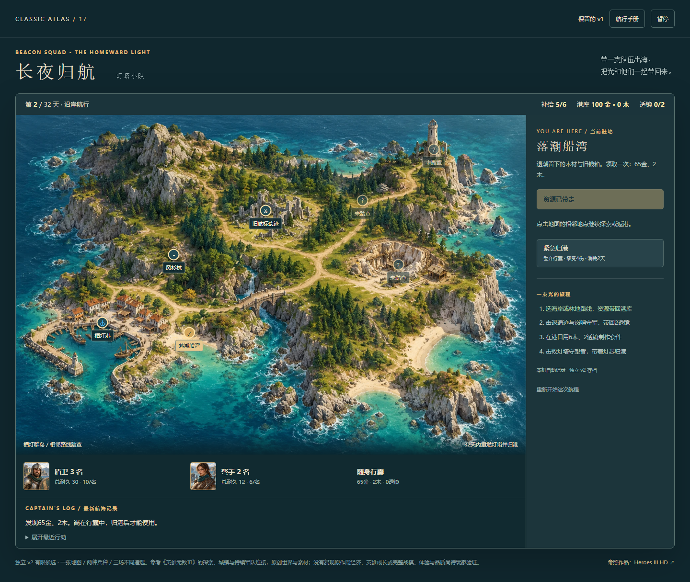
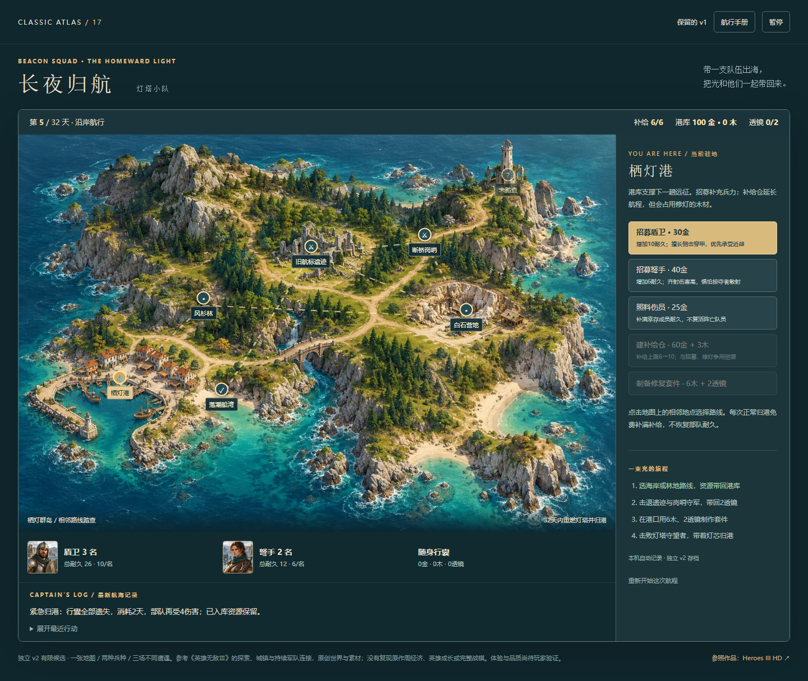
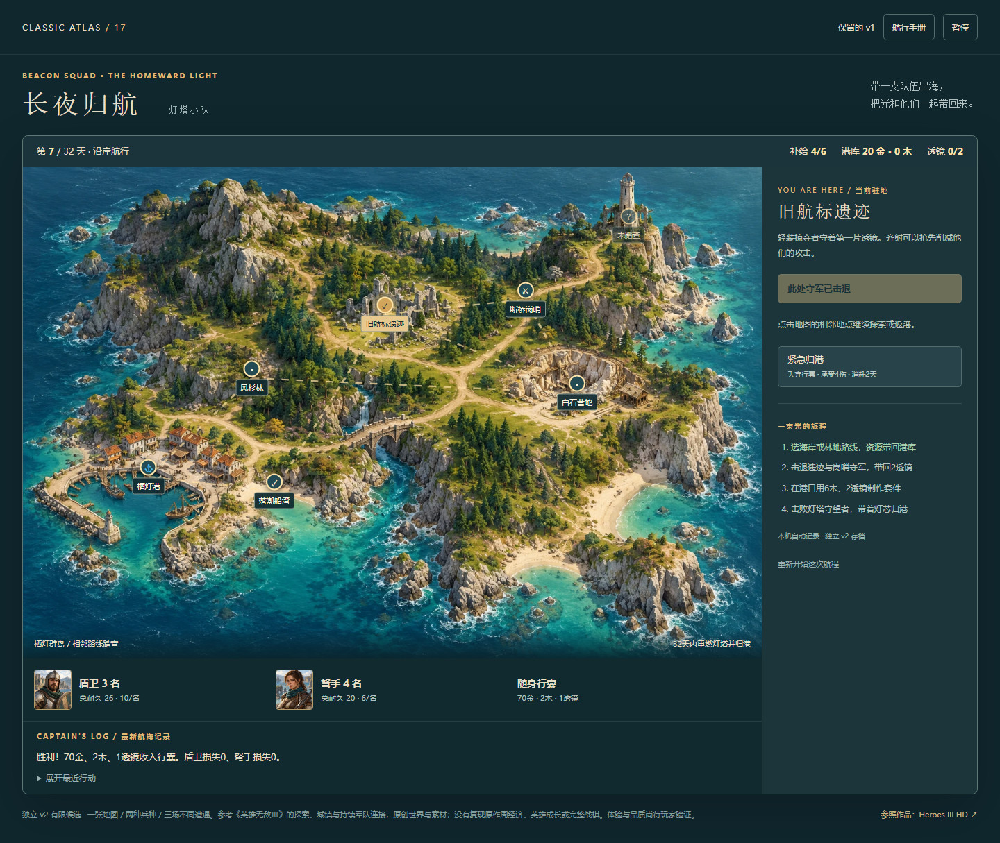
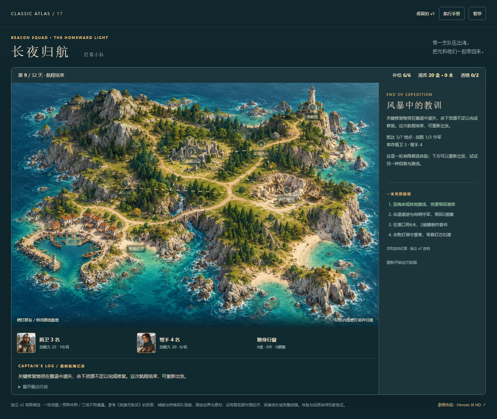

2026-10-20公开网页正常UI的一条短闭环。未发现需要修复的硬问题，本次只补证据与边界，规则、难度、美术、旧版和其他游戏不变。
打开原v2 · 路线与准确边界 · 汇总 · 原始报告 · 保存事件离线核对 · 保留核对
第5天撤退：丢65金2木、受4伤并耗2天，港库100金保留，可继续行动。第9天失去唯一透镜：队伍仍存活，但余下修复物资不足，明确失败。取消重开保留原局；确认重开回到初始，并可再次正常采集。三个刷新检查均精确保留对应状态并先暂停。
控制台及HTTP错误为空；10运行/素材文件与基线匹配。原末尾资源断言和6次肖像ERR_ABORTED请求取消事件完整保留，未冒称零请求失败。当前图片在7个截图点均完整加载，未观察影响流程的素材缺失；具体分类及未逐条证明的取消原因见记录。
以下为未经裁切的真实公开页面截图。桌面Chromium自动化，不是真人、真机、声音、审美或全部失利原因验收。独立保存事件审计不算额外实玩。



